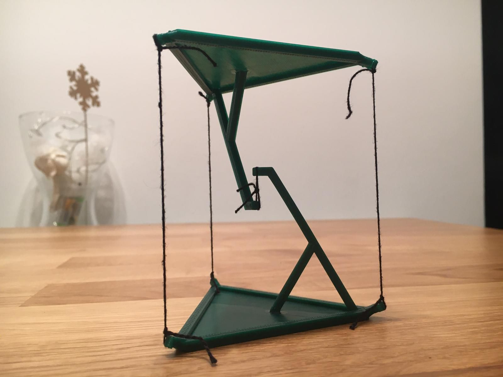
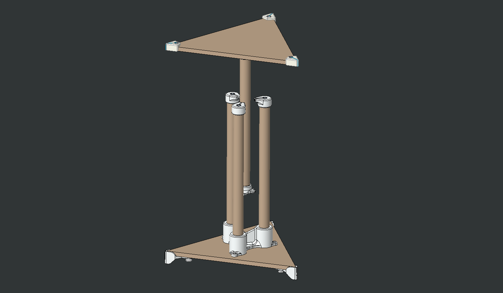
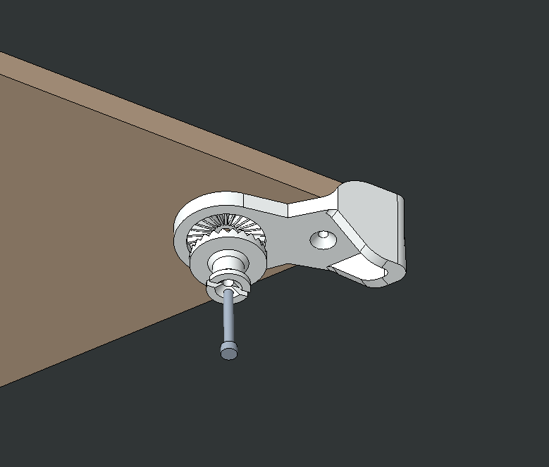
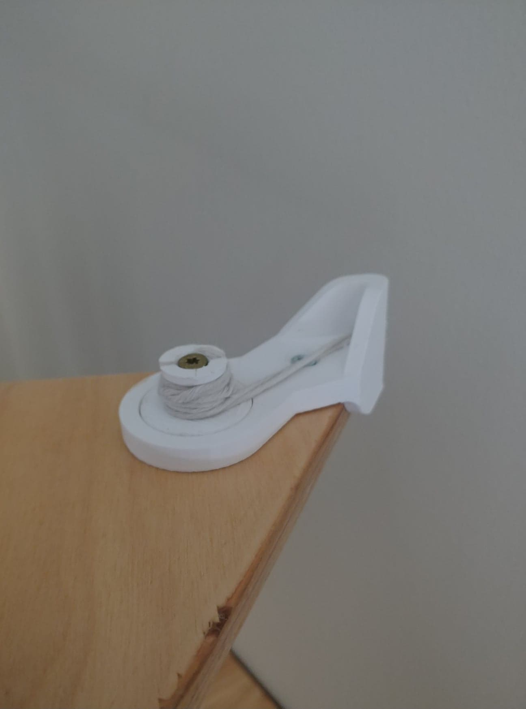
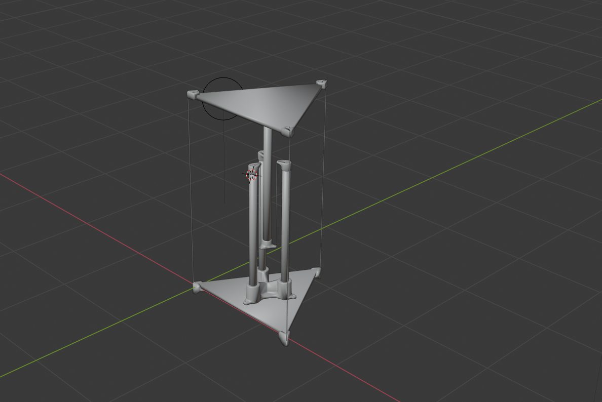
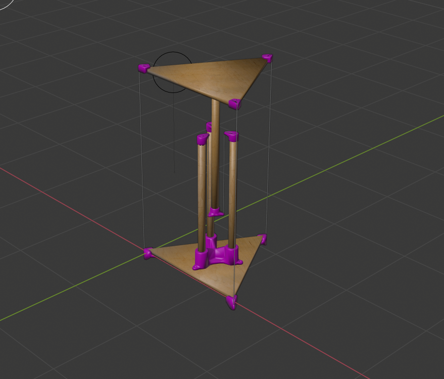
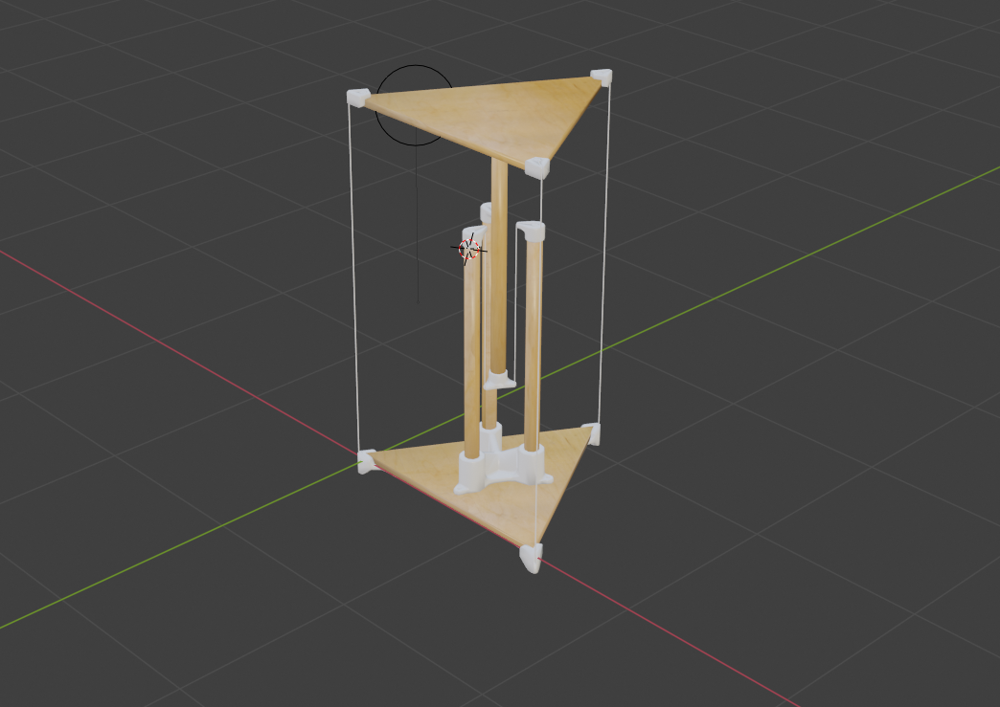
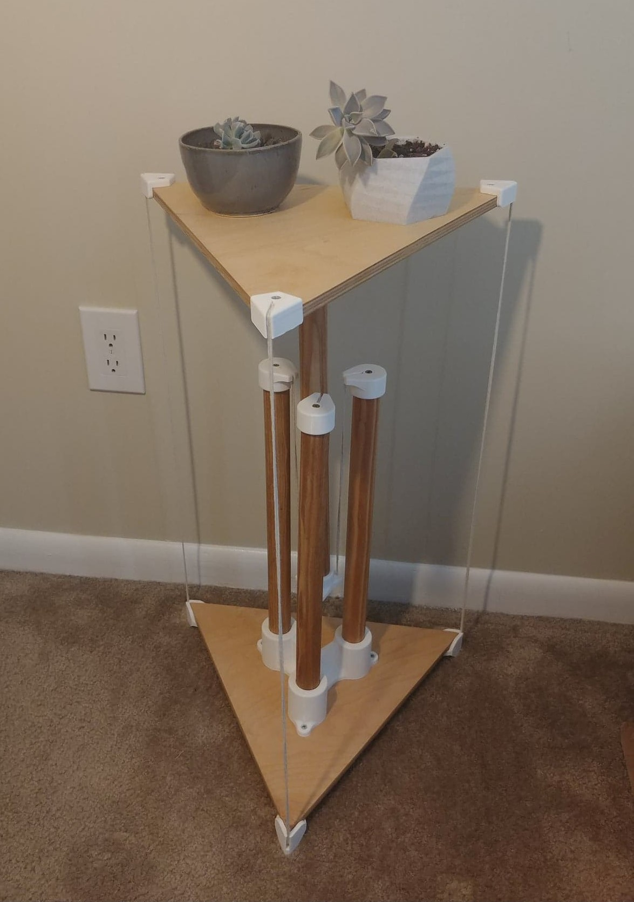

I saw a cool table.
It was 3D printed and held up by its own weight.

I thought it was a really cool concept and wanted to put my own spin on it. I knew that if I looked, I would find countless other takes on the idea, so I made a rule: no Google. Not all of Google, just no searching for creative inspiration. I hoped this would leave me relatively "untainted," giving me a chance to stumble on a genuinely original idea.

My first problem was tensioning the wires. With the 3D printed "Impossible Table," the creators could probably tighten the string by hand and tie it off. That wouldn't work on a larger table. First, the strings would need much more tension. Second, I needed to tension them accurately so the tabletop would be level. Finally, the string I was using tends to creep over time, so the tension needed to be easy to adjust after the table was fully assembled.


I designed a foot for the table that both looks good and provides the functionality I needed. Loosening the screw in the center of the spindle lets it rotate; then you simply turn the spindle until the string reaches the desired tension. If I were doing this again, I would probably tweak the design so no tools are needed to adjust the tension, but it works well as is.
Next, I rendered the design to get a better sense of how it would look. I still wasn't sure I liked it, and it never hurts to have a few renders on hand. Besides, a rendering in Blender doesn't take long.

I haven't described my Blender process before, so I thought it would be interesting to do so here. First, I export the part from CAD as an STL file and import it into Blender. It arrives with no color or texture data, so it is a dull, flat grey.

Once the part is imported, each component needs textures and colors assigned. At this stage, I find it useful to group all of the parts made of the same material, so a texture applies to all of them at once. In the image above, I hadn't set the real color of some parts yet, but I didn't want to forget them, so I quickly made them purple.

Once the colors and textures are created and assigned, it is time for lighting. With the lights positioned and colored, the scene is ready to render. After the first render, the colors and lighting usually need some tweaking until the result is acceptable.
With the render looking good, I went ahead and built the table. I don't have any photos of the process, so you will have to use your imagination. Since most of the joinery was 3D printed, the build was surprisingly easy, though it took a few days for all of the prints to finish.

Special thanks to my dad for his patience when I "surprise borrowed" all of his tools and returned most of them.